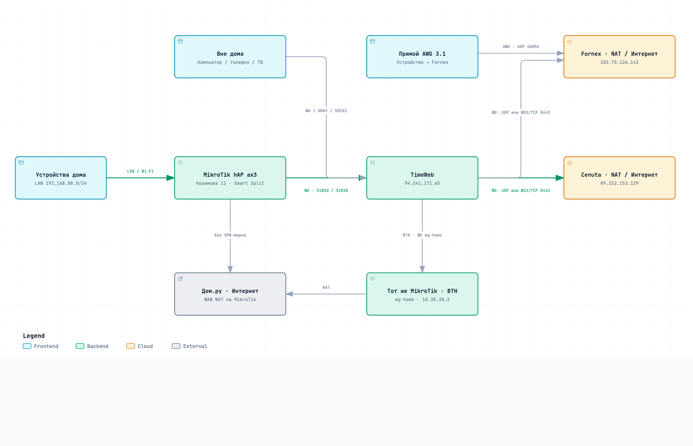
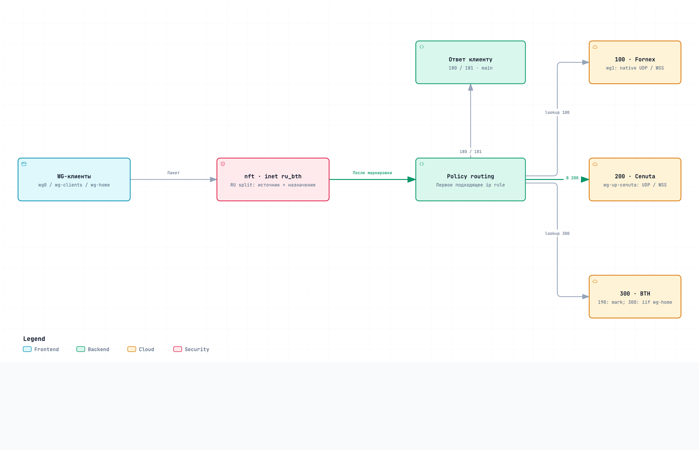
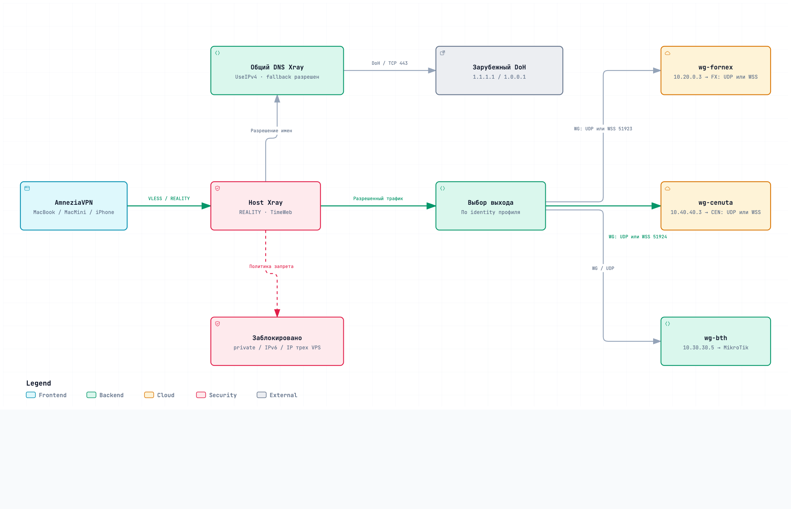
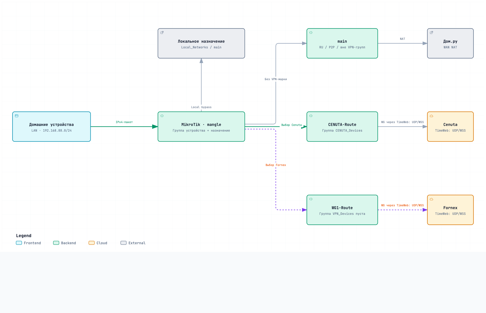
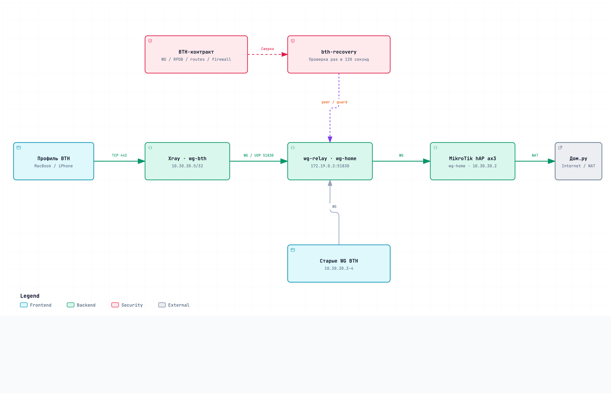
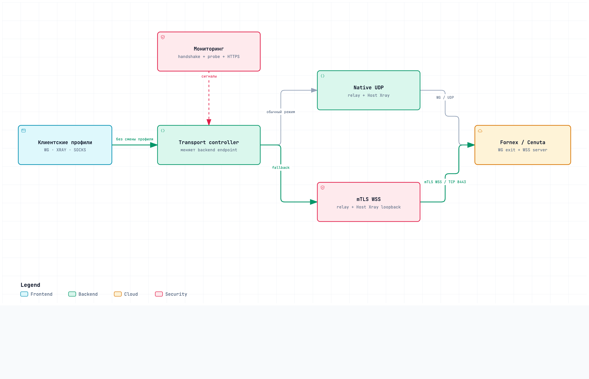

-
01
Топология: дома и вне дома

Дома: LAN → MikroTik → WG → TimeWeb → Cenuta / Fornex.Прямой выход в Дом.ру, внешние WG / XRAY / SOCKS, AWG 3.1 и возврат домой через BTH.
-
02
WireGuard на TimeWeb

WG → wg-relay → таблицы 100 / 200 / 300.RU split, приоритеты policy rules, выбор выхода и обратный маршрут к клиенту.
-
03
REALITY: профиль и DNS

AmneziaVPN → TCP/443 → Xray → WG outbound.Три выхода профиля, отдельный поток внутреннего DNS и запреты прямого выхода.
-
04
MikroTik: домашний Smart Split

LAN 192.168.88.0/24 → mangle → выбранный маршрут.Группы устройств, локальный / RU / P2P bypass и WG до TimeWeb. В группе Fornex пока нет устройств.
-
05
BTH: домашний выход

Xray → wg-relay → тот же MikroTik → Дом.ру.Домашний выход в Интернет, возврат ответов, контракт и ограниченное восстановление BTH.
-
06
TimeWeb: transport FX / CEN

Мониторинг → controller → native UDP или mTLS WSS.Профили WG, XRAY и SOCKS не меняются; BTH не участвует в WSS fallback.